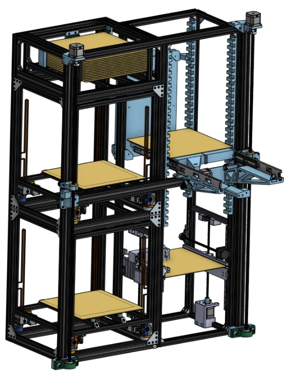
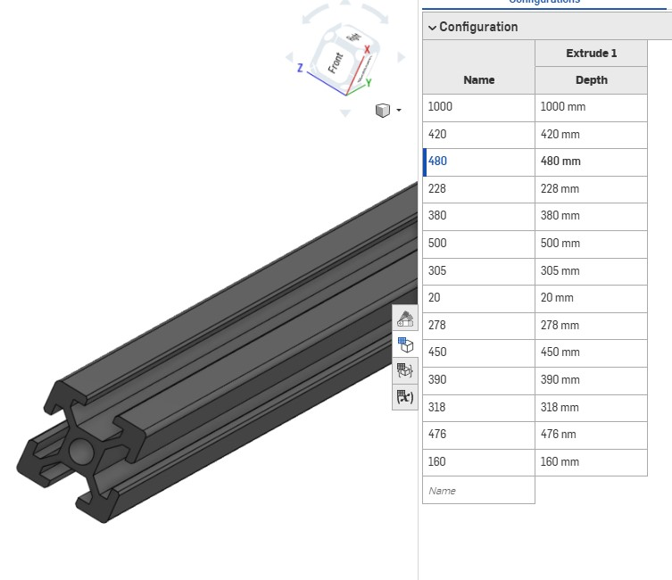

01 Creation and management of the digital twin


I built and maintained a live Onshape model of every subsystem, so the mechanical, electrical, and software groups all referenced one source of truth instead of three. Configurable aluminum extrusion and hardware libraries kept the unique part count down and made BOM generation quick, and sub-assemblies kept the main workspace organized and the load times survivable.